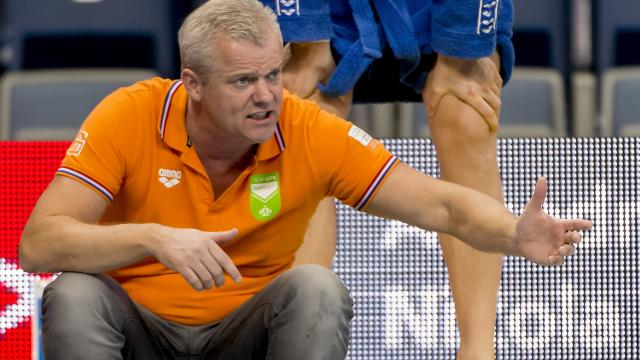

Waterpoloërs ook te sterk voor Kazachstan op OKT

De Nederlandse waterpoloërs hebben maandag ook hun tweede wedstrijd bij het Olympisch Kwalificatietoernooi (OKT) in het Italiaanse Triëst gewonnen. De ploeg van bondscoach Robin van Galen was met 8-5 te sterk voor Kazachstan.
Zondag won Oranje al verrassend met 7-5 van Spanje, waardoor de ploeg nog alle kans heeft op een ticket voor de Spelen komende zomer in Rio de Janeiro.
De komende dagen speelt Nederland nog groepswedstrijden tegen Italië, Zuid-Afrika en Duitsland.
De beste vier landen uit de poule gaan door naar de belangrijke kwartfinales. Voor de vier halve finalisten ligt er in Italië een ticket klaar voor de Spelen.
De laatste keer dat de Nederlandse waterpolomannen actief waren op de Spelen was in 2000 in Sydney. De waterpolovrouwen grepen vorige maand op het OKT in Gouda naast een olympisch ticket.
Goede start
Een plek in de kwartfinale van het OKT kan Oranje nu al bijna niet meer ontgaan. De ploeg van Van Galen ging maandag zeer voortvarend van start tegen Kazachstan, in een wedstrijd die vooraf door de bondscoach een "steutelduel" werd genoemd.
Na het eerste kwart stond Nederland al met 3-0 voor door twee goals van Robin Lindhout en een van Jorn Winkelhorst, waarna het in het tweede kwart gelijk opging. Kazachstan scoorde twee keer en namens Oranje waren Luuk Gielen en Yoran Frauenfelder trefzeker, waardoor het 5-2 was halverwege.
Echt in de problemen kwam Nederland vervolgens niet meer. Dankzij twee keer Gielen hield Oranje Kazachstan ook in het derde kwart op afstand: 7-4.
In het laatste kwart kwam Kazachstan nog terug tot 7-5, maar daarna zette Lindhout de 8-5 eindstand op het scorebord waarmee Nederland op schema blijft voor Rio.
Cruciaal
Als Nederland dinsdag ook van Duitsland wint eindigt de ploeg van Van Galen zo goed als zeker bij de eerste drie in de poule. "Daarmee ontlopen we Hongarije in de kwartfinales. Dat is nu ons doel", zei de bondscoach na de zege op Kazachstan.
Volgens Van Galen leeft zijn ploeg in Triëst van dag tot dag en van wedstrijd naar wedstrijd. "Zo benaderen wij dit toernooi echt. Het duel met Duitsland is weer cruciaal.''